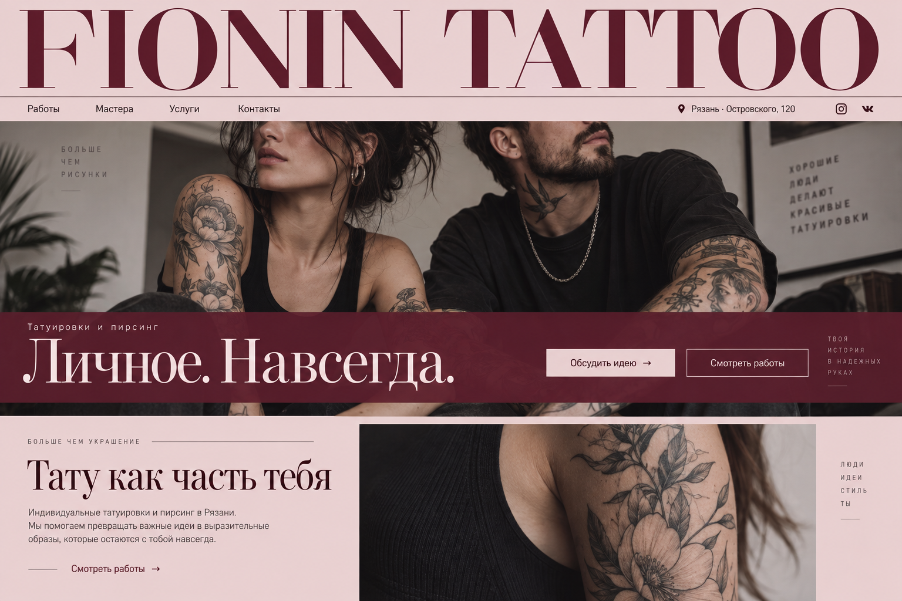

Татуировка
От небольшого символа до сложной композиции. Обсудим рисунок, размер и расположение на теле.

Индивидуальные татуировки и пирсинг в Рязани.
Мы помогаем превращать важные идеи в выразительные
образы, которые остаются с тобой навсегда.
Люди
идеи
стиль
ты
01 / Портфолио
Детали имеют значениеКрупные композиции и тонкие линии.
Найдите то, что откликается вам.
Фотографии из галереи и отзывов Fionin Tattoo на Яндекс Картах.
Есть своя идея? Обсудим ↗02 / Услуги
От задумки до воплощенияНачнём с разговора. Подберём формат работы, обсудим детали и заранее согласуем стоимость.
Узнать стоимость ↗От небольшого символа до сложной композиции. Обсудим рисунок, размер и расположение на теле.
Поможем выбрать прокол и украшение. Вопросы по процедуре и уходу обсудим с мастером.
Хотите изменить прежнюю работу? Пришлите её фото — мастер оценит возможные варианты.
Подарок с местом для личного выбора. Номинал и условия использования уточним при оформлении.
03 / Мастера
За каждой линией — человекМожно прийти с готовым замыслом
или начать с «хочу, но не знаю что».
Разберёмся вместе.
Татуировка и пирсинг
Обсудить запись ↗Татуировка
Обсудить запись ↗Татуировка
Обсудить запись ↗Свободное время и запись к выбранному мастеру уточняем в переписке.
Больше о студии в VK ↗04 / Первая встреча
Шаг за шагомПервая татуировка или продолжение вашей истории — начнём с того, что важно именно вам.
Сделать первый шагВы рассказываете о задумке и показываете референсы. Мы задаём вопросы, обсуждаем место, размер и детали.
Определяем композицию, стоимость и подходящее время. Перед сеансом мастер объяснит, как подготовиться.
Работаем над татуировкой и рассказываем об уходе. Если появятся вопросы — напишите мастеру.
05 / Доверие
Отзывы на Яндекс Картах ↗Роман помог подобрать украшения и доработать эскиз. В отзыве особенно отмечены внимательное общение и уютная студия.
Перед первой татуировкой мастер объяснил этапы, уход и заживление. Помог определиться с рисунком и ответил на вопросы.
Мария помогла воплотить личную идею. Клиентка отметила чуткость, комфорт на сеансе и внимание к пожеланиям.
Цена зависит от размера, сложности рисунка, места нанесения и объёма работы. Пришлите идею, примерный размер и референсы — мастер оценит стоимость до записи.
Нет. Достаточно описать идею или показать несколько примеров того, что вам нравится. Мастер поможет определить композицию и детали.
Начнём с фотографии существующей работы. Возможность коррекции и подходящий рисунок зависят от её размера, цвета и состояния — это оценит мастер.
Заранее обсудите с мастером место нанесения, длительность и подготовку. О любых обстоятельствах, которые могут повлиять на процедуру, сообщите до записи.
Мастер объяснит уход после вашей процедуры. Следуйте выданным рекомендациям, а если что-то вызывает вопросы — свяжитесь со студией.
Напишите в тот же диалог, где договаривались о сеансе, или позвоните в студию. Сообщите о переносе заранее, чтобы подобрать новое время.
07 / Начнём с разговора
Ваша следующая историяНесколько слов о задумке — и у нас уже есть отправная точка.
+7 (910) 908-07-25Если удобнее поговорить08 / Студия
До встречи в РязаниРязань, Островского, 120
2 этаж · рядом с остановкой «Лицей № 7»
Ежедневно, 10:00–20:00
По предварительной записи
Fionin Tattoo
Островского, 120 · РязаньОткрыть карту Адрес, фотографии входа и маршрут на Яндекс КартахFionin Tattoo
Детали
О записи и данных
Форма готовит текст сообщения прямо в вашем браузере. Имя и описание идеи не отправляются на сервер сайта и не сохраняются после перезагрузки.
Чтобы связаться со студией, скопируйте текст, откройте VK и отправьте его самостоятельно. Запись подтверждается только в разговоре с мастером.
При открытии внешних ссылок действуют правила соответствующего сервиса.
О фотографиях
Фотографии в первом экране и блоке «Тату как часть тебя» — иллюстрации выбранной дизайн-концепции, созданные с помощью ИИ.
В разделе «Портфолио» — реальные фотографии из галереи и отзывов Fionin Tattoo на Яндекс Картах. Они представлены без изменения самих работ.
Фото из галереи Fionin Tattoo на Яндекс Картах ↗
Проверьте перед отправкой
Скопируйте текст и отправьте его в сообщения сообщества студии. Мастер ответит и подтвердит запись.